文物橡皮图章（174幅）
新石器时代（17幅）
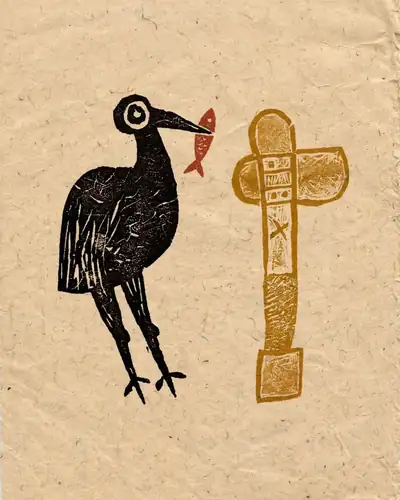
彩绘鹳鱼石斧图陶缸中国国家博物馆 · 新石器时代
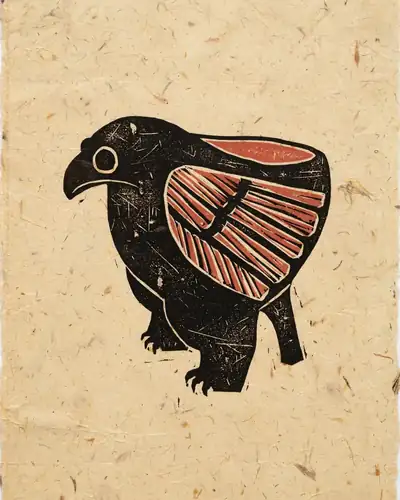
陶鹰鼎中国国家博物馆 · 新石器时代
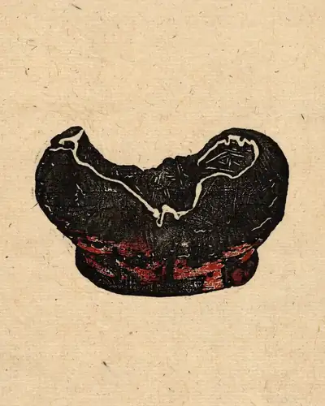
河姆渡出土朱漆碗浙江省博物馆 · 新石器时代
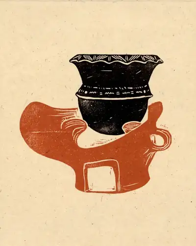
河姆渡出土陶灶浙江省博物馆 · 新石器时代
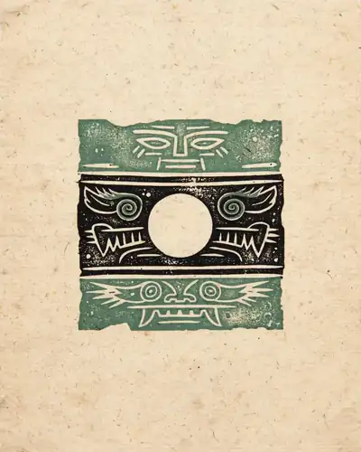
良渚出土玉琮王浙江省博物馆 · 新石器时代
红山文化女神像辽宁省文物考古研究所 · 新石器时代
彩陶人面鱼纹盆中国国家博物馆 · 新石器时代
彩陶舞蹈纹盆中国国家博物馆 · 新石器时代
彩陶贴塑人纹双系壶中国国家博物馆 · 新石器时代
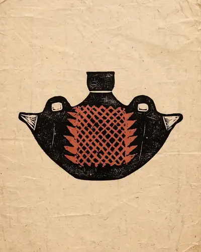
彩陶网纹船形壶中国国家博物馆 · 新石器时代
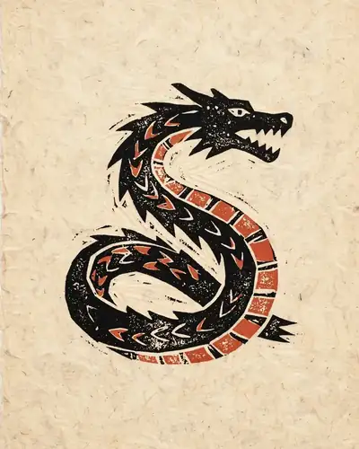
彩绘蟠龙纹陶盘中国社会科学院考古研究所 · 新石器时代
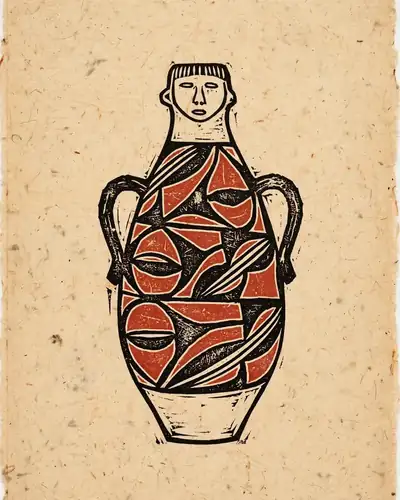
彩陶人形双系瓶甘肃省博物馆 · 新石器时代
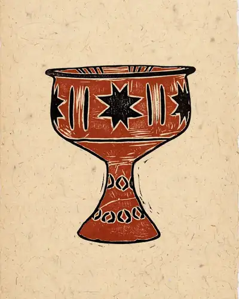
彩陶八角星纹豆山东省文物考古研究所 · 新石器时代
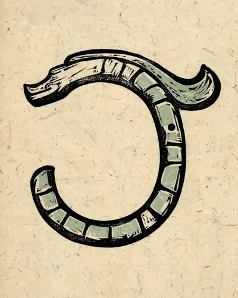
新石器时代红山文化玉龙中国国家博物馆 · 新石器时代
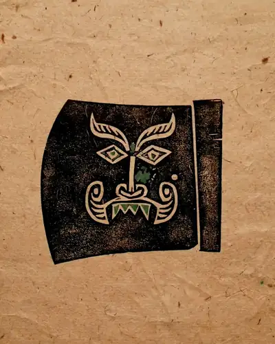
新石器时代良渚文化神人兽面纹玉钺浙江省博物馆 · 新石器时代
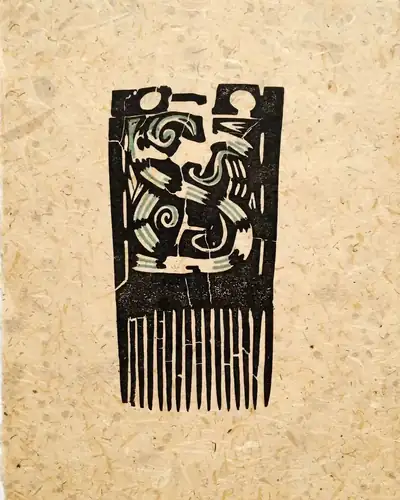
新石器时代大汶口文化象牙梳中国国家博物馆 · 新石器时代
新石器时代河姆渡文化双鸟朝阳纹象牙雕刻器浙江省博物馆 · 新石器时代
夏（1幅）
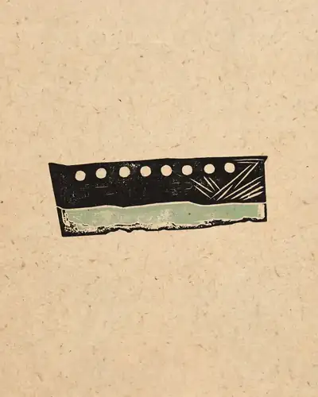
夏七孔玉刀二里头夏都遗址博物馆 · 夏
商（10幅）
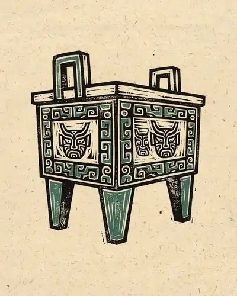
后母戊鼎中国国家博物馆 · 商
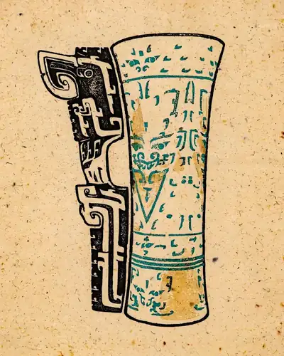
嵌绿松石象牙杯中国社会科学院考古研究所 · 商
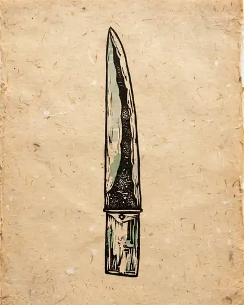
大玉戈湖北省博物馆 · 商
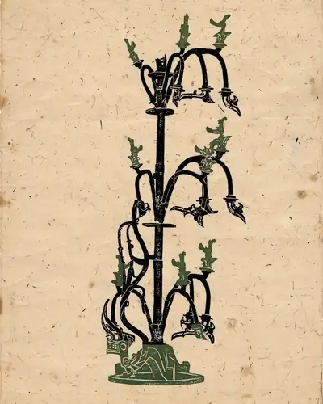
青铜神树三星堆博物馆 · 商
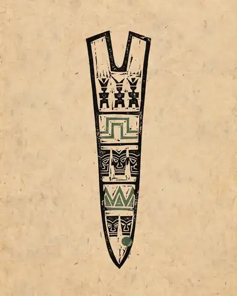
三星堆出土玉边璋三星堆博物馆 · 商
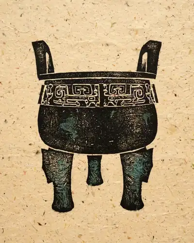
子龙鼎中国国家博物馆 · 商
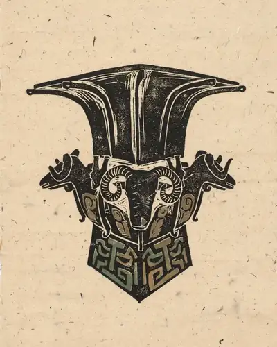
四羊方尊中国国家博物馆 · 商
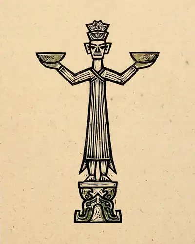
铜立人像广汉三星堆博物馆 · 商
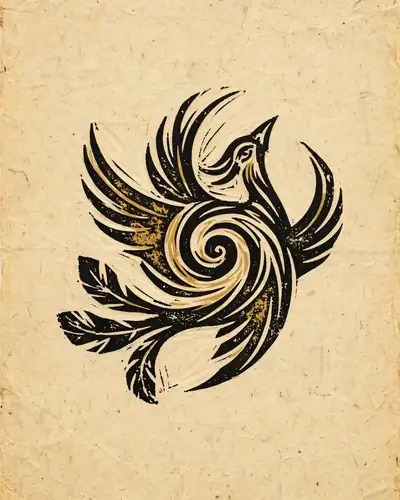
商太阳神鸟金箔片成都金沙遗址博物馆 · 商
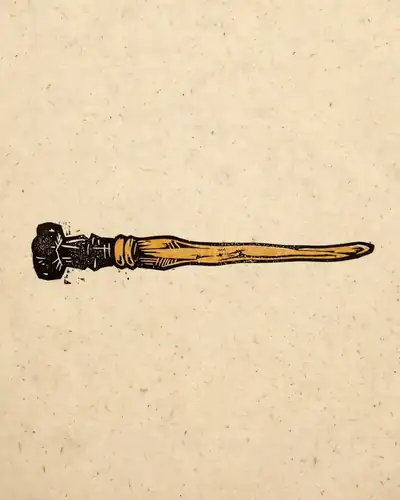
商金杖广汉三星堆博物馆 · 商
西周（15幅）
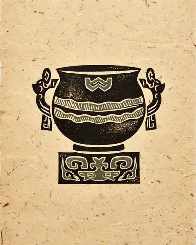
利簋中国国家博物馆 · 西周
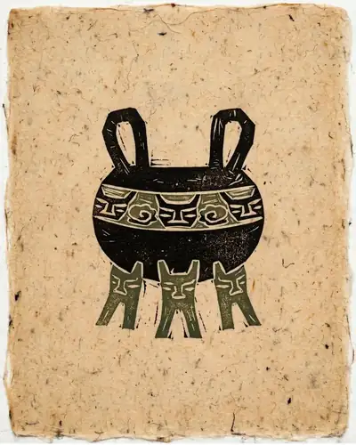
大盂鼎中国国家博物馆 · 西周
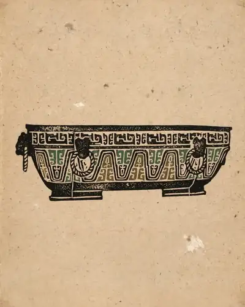
虢季子白盘中国国家博物馆 · 西周
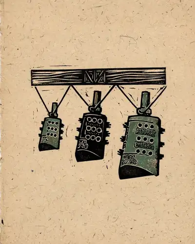
晋侯苏钟上海博物馆 · 西周
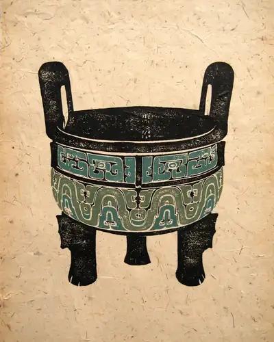
大克鼎上海博物馆 · 西周
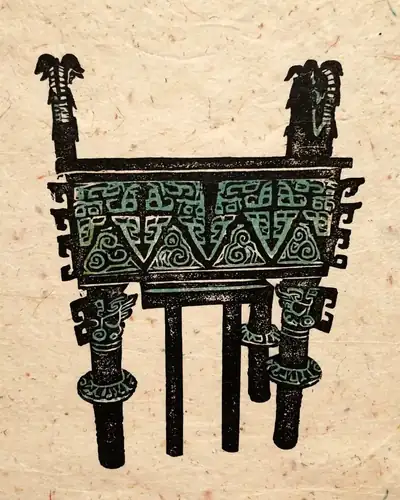
太保鼎天津博物馆 · 西周
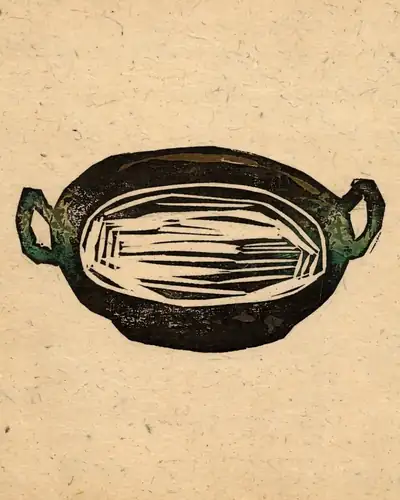
墙盘宝鸡青铜器博物院 · 西周
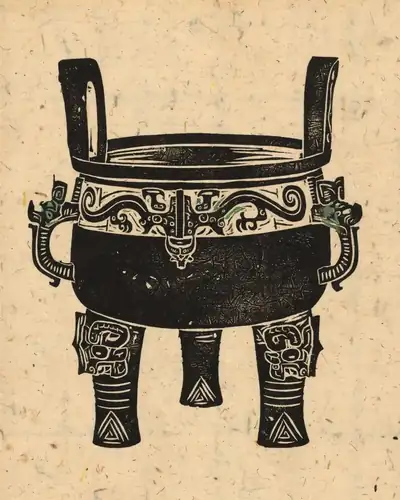
淳化大鼎淳化县文博馆 · 西周
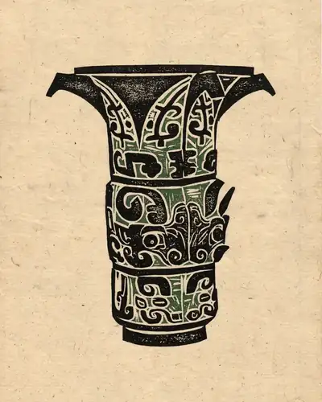
何尊宝鸡青铜器博物院 · 西周
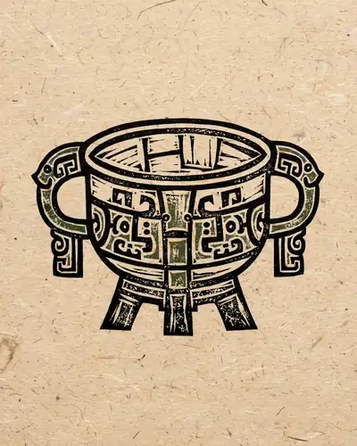
天亡簋中国国家博物馆 · 西周
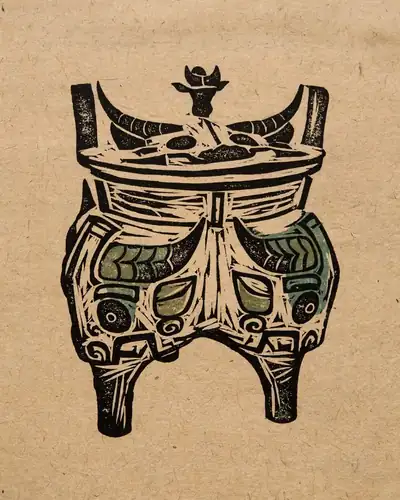
伯矩鬲首都博物馆 · 西周
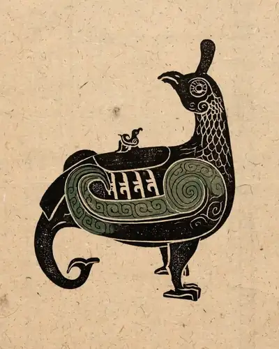
晋侯鸟尊山西博物院 · 西周
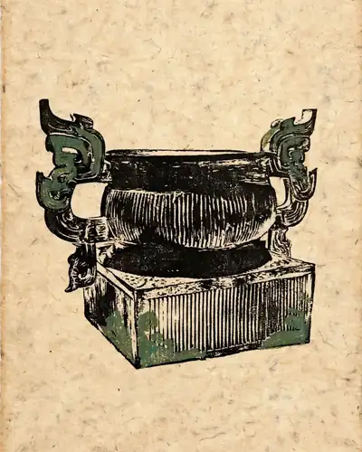
西周簋宝鸡青铜器博物院 · 西周
逨盘宝鸡青铜器博物院 · 西周
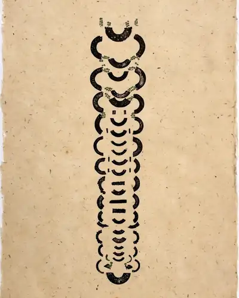
西周晋侯夫人组玉佩山西博物院 · 西周
春秋（3幅）
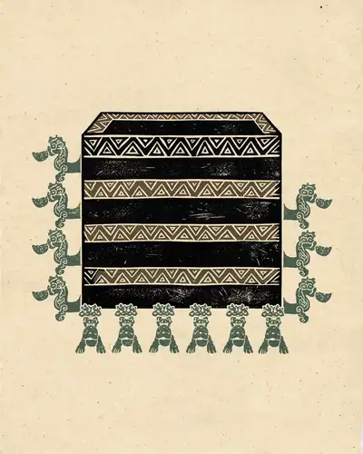
淅川出土铜禁河南博物院 · 春秋
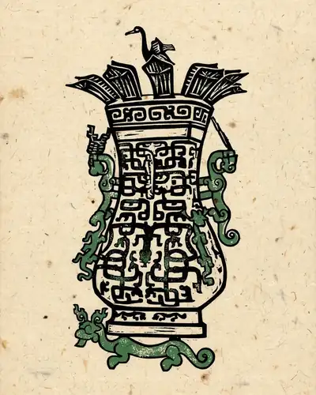
新郑出土莲鹤铜方壶河南博物院 · 春秋
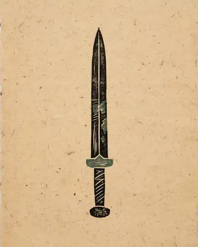
越王勾践剑湖北省博物馆 · 春秋
战国（17幅）
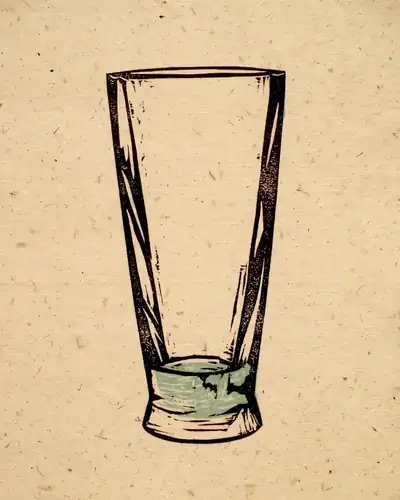
水晶杯杭州博物馆 · 战国
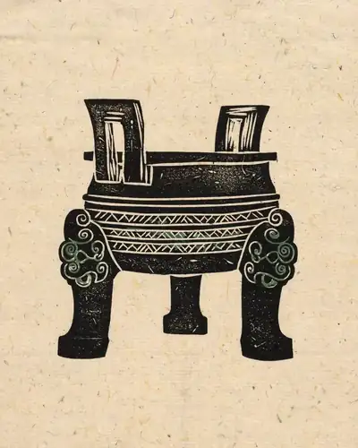
铸客大铜鼎安徽博物院 · 战国
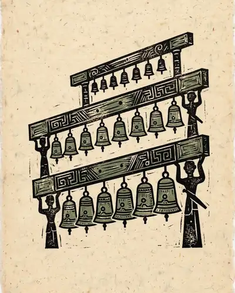
曾侯乙编钟湖北省博物馆 · 战国
曾侯乙墓外棺湖北省博物馆 · 战国
曾侯乙青铜尊盘湖北省博物馆 · 战国
彩漆木雕小座屏湖北省博物馆 · 战国
铜错金银四龙四凤方案河北博物院 · 战国
中山王铁足铜鼎河北博物院 · 战国
人物御龙帛画湖南省博物馆 · 战国
人物龙凤帛画湖南省博物馆 · 战国
商鞅方升上海博物馆 · 战国
战国多节活环套练玉佩湖北省博物馆 · 战国
战国包金镶玉嵌琉璃银带钩中国国家博物馆 · 战国
战国彩绘乐舞图鸳鸯形漆盒湖北省博物馆 · 战国
战国石鼓（1组10只）故宫博物院 · 战国
战国郭店楚简《老子（甲、乙、丙）》荆门市博物馆 · 战国
战国楚简《孔子诗论》上海博物馆 · 战国
秦（2幅）
铜车马秦始皇帝陵博物院 · 秦
秦云梦睡虎地秦简《语书》湖北省博物馆 · 秦
西汉（18幅）
齐王墓青铜方镜淄博市博物馆 · 西汉
茂陵石雕茂陵博物馆 · 西汉
刘胜金缕玉衣河北博物院 · 西汉
长信宫灯河北博物院 · 西汉
铜屏风构件5件南越王博物院 · 西汉
角形玉杯南越王博物院 · 西汉
直裾素纱襌衣湖南省博物馆 · 西汉
马王堆一号墓木棺椁湖南省博物馆 · 西汉
马王堆一号墓T型帛画湖南省博物馆 · 西汉
诅盟场面贮贝器中国国家博物馆 · 西汉
彩绘人物车马镜西安博物院 · 西汉
杀人祭柱场面贮贝器云南省博物馆 · 西汉
西汉"皇后之玺"玉玺陕西历史博物馆 · 西汉
西汉"滇王之印"金印中国国家博物馆 · 西汉
西汉错金银镶松石狩猎纹铜伞铤河北省文物研究所 · 西汉
西汉识文彩绘盝顶长方形漆奁湖南省博物馆 · 西汉
西汉黑漆朱绘六博具湖南省博物馆 · 西汉
西汉马王堆汉墓帛书《周易》湖南省博物馆 · 西汉
东汉（2幅）
摇钱树绵阳市博物馆 · 东汉
铜奔马甘肃省博物馆 · 东汉
汉（1幅）
汉红地对人兽树纹罽袍新疆维吾尔自治区文物考古研究所 · 汉
东汉至魏晋（1幅）
“五星出东方”护膊新疆维吾尔自治区文物考古研究所 · 东汉至魏晋
三国·吴（4幅）
朱然墓出土漆木屐朱然家族墓地博物馆 · 三国·吴
朱然墓出土贵族生活图漆盘朱然家族墓地博物馆 · 三国·吴
吴“赤乌十四年”款青釉虎子中国国家博物馆 · 三国·吴
吴彩绘季札挂剑图漆盘安徽省文物考古研究所 · 三国·吴
西晋（3幅）
陆机《平复帖》卷故宫博物院 · 西晋
西晋青釉神兽尊南京博物院 · 西晋
西晋神兽纹玉樽湖南省博物馆 · 西晋
东晋（1幅）
王珣《伯远帖》卷故宫博物院 · 东晋
南朝（1幅）
竹林七贤砖印模画南京博物院 · 南朝
北朝（2幅）
红地云珠日天锦青海省文物考古研究所 · 北朝
北朝方格兽纹锦新疆维吾尔自治区博物馆 · 北朝
北魏（1幅）
司马金龙墓出土漆屏大同市博物馆 · 北魏
北齐（3幅）
娄睿墓鞍马出行图壁画山西省考古研究所 · 北齐
北齐青釉仰覆莲花尊中国国家博物馆 · 北齐
北齐白釉绿彩长颈瓶河南博物院 · 北齐
北燕（1幅）
鸭形玻璃注辽宁省博物馆 · 北燕
隋（4幅）
展子虔《游春图》卷故宫博物院 · 隋
隋白釉龙柄双联传瓶天津博物馆 · 隋
隋绿玻璃盖罐中国国家博物馆 · 隋
隋绿玻璃小瓶中国国家博物馆 · 隋
唐（29幅）
涅槃变相碑山西省艺术博物馆 · 唐
常阳太尊石像山西博物院 · 唐
大秦景教流行中国碑西安碑林博物馆 · 唐
舞马衔杯仿皮囊式银壶陕西历史博物馆 · 唐
兽首玛瑙杯陕西历史博物馆 · 唐
景云铜钟西安碑林博物馆 · 唐
银花双轮十二环锡杖法门寺博物馆 · 唐
八重宝函法门寺博物馆 · 唐
铜浮屠法门寺博物馆 · 唐
冯承素摹王羲之《兰亭序》卷故宫博物院 · 唐
国诠《善见律》卷故宫博物院 · 唐
怀素《苦笋帖》卷上海博物馆 · 唐
杜牧《张好好诗》卷故宫博物院 · 唐
唐人《摹王羲之一门书翰》卷辽宁省博物馆 · 唐
韩滉《五牛图》卷故宫博物院 · 唐
周昉《挥扇仕女图》卷故宫博物院 · 唐
孙位《高逸图》卷上海博物馆 · 唐
唐鲁山窑黑釉蓝斑腰鼓故宫博物院 · 唐
陶骆驼载乐舞三彩俑中国国家博物馆 · 唐
越窑青釉褐彩云纹五足炉临安市文物馆 · 唐
长沙窑青釉褐彩贴花人物纹壶湖南省博物馆 · 唐
三彩骆驼载乐俑陕西历史博物馆 · 唐
唐龟负论语玉烛酒筹鎏金银筒镇江博物馆 · 唐
唐昭陵六骏石刻（什伐赤、白蹄乌、特勒骠、青骓4幅）西安碑林博物馆 · 唐
唐写本王仁煦《刊谬补缺切韵》故宫博物院 · 唐
唐章怀太子墓壁画马球图（1组）陕西历史博物馆 · 唐
唐章怀太子墓壁画狩猎出行图（1组）陕西历史博物馆 · 唐
唐懿德太子墓壁画阙楼图（1组）陕西历史博物馆 · 唐
唐永泰公主墓壁画宫女图（1组）陕西历史博物馆 · 唐
五代（9幅）
杨凝式《神仙起居法帖》卷故宫博物院 · 五代
周文矩《重屏会棋图》卷故宫博物院 · 五代
顾闳中《韩熙载夜宴图》卷故宫博物院 · 五代
卫贤《高士图》卷故宫博物院 · 五代
董源《山口待渡图》卷辽宁省博物馆 · 五代
黄筌《写生珍禽图》卷故宫博物院 · 五代
耀州窑摩羯形水盂辽宁省博物馆 · 五代
越窑莲花式托盏苏州博物馆 · 五代
耀州窑青釉刻花提梁倒流壶陕西历史博物馆 · 五代
辽（1幅）
胡瓌《卓歇图》卷故宫博物院 · 辽
北宋（19幅）
林逋《自书诗》卷故宫博物院 · 北宋
蔡襄《自书诗》卷故宫博物院 · 北宋
文彦博《三帖卷》故宫博物院 · 北宋
韩琦《行楷信札》卷贵州省博物馆 · 北宋
王安石《楞严经旨要》卷上海博物馆 · 北宋
米芾《苕溪诗》卷故宫博物院 · 北宋
赵佶《草书千字文》卷辽宁省博物馆 · 北宋
王诜《渔村小雪图》卷故宫博物院 · 北宋
梁师闵《芦汀密雪图》卷故宫博物院 · 北宋
李公麟《摹韦偃牧放图》卷故宫博物院 · 北宋
祁序《江山牧放图》卷故宫博物院 · 北宋
张择端《清明上河图》卷故宫博物院 · 北宋
王希孟《千里江山图》卷故宫博物院 · 北宋
汝窑天青釉弦纹樽故宫博物院 · 北宋
官窑弦纹瓶故宫博物院 · 北宋
钧窑月白釉出戟尊故宫博物院 · 北宋
登封窑珍珠地划花虎豹纹瓶故宫博物院 · 北宋
北宋木雕真珠舍利宝幢（含木函）苏州博物馆 · 北宋
北宋刻本《范仲淹文集》（30卷）中国国家图书馆 · 北宋
南宋（2幅）
马和之《后赤壁赋图》卷故宫博物院 · 南宋
赵伯骕《万松金阙图》卷故宫博物院 · 南宋
宋（1幅）
宋人摹阎立本《步辇图》卷故宫博物院 · 宋
西夏（1幅）
西夏文佛经《吉祥遍至口和本续》纸本宁夏文物考古研究所 · 西夏
元（3幅）
青花釉里红瓷仓江西省博物馆 · 元
青花萧何月下追韩信图梅瓶南京市博物馆 · 元
元蓝釉白龙纹梅瓶扬州博物馆 · 元
明（2幅）
凤冠中国国家博物馆 · 明
明曹全碑初拓本（"因"字不损本）上海博物馆 · 明
橡皮图章（70幅）
世界名山（10幅）
Mount Everest 珠穆朗玛峰
Mount Fuji 富士山
Matterhorn 马特洪峰
Kilimanjaro 乞力马扎罗山
Mont Blanc 勃朗峰
Denali 德纳里峰
Aconcagua 阿空加瓜峰
Table Mountain 桌山
Aoraki / Mount Cook 库克山
Huangshan 黄山
中国古建筑（10幅）
故宫太和殿 Hall of Supreme Harmony
天坛祈年殿 Hall of Prayer for Good Harvests
大雁塔 Giant Wild Goose Pagoda
应县木塔 Yingxian Wooden Pagoda
悬空寺 Hanging Temple
岳阳楼 Yueyang Tower
黄鹤楼 Yellow Crane Tower
布达拉宫 Potala Palace
颐和园佛香阁 Tower of Buddhist Incense
平遥古城墙 Pingyao Ancient City Wall
动物（15幅）
大熊猫 Giant Panda
东北虎 Siberian Tiger
丹顶鹤 Red-crowned Crane
金丝猴 Golden Snub-nosed Monkey
雪豹 Snow Leopard
锦鲤 Koi Fish
海龟 Sea Turtle
赤狐 Red Fox
猫头鹰 Owl
梅花鹿 Sika Deer
亚洲象 Asian Elephant
孔雀 Peacock
玉兔 Jade Rabbit
骏马 Horse
狸花猫 Tabby Cat
世界建筑（12幅）
埃菲尔铁塔 Eiffel Tower
吉萨金字塔 Pyramids of Giza
泰姬陵 Taj Mahal
悉尼歌剧院 Sydney Opera House
大本钟 Big Ben
罗马斗兽场 Colosseum
新天鹅堡 Neuschwanstein Castle
圣瓦西里大教堂 Saint Basil's Cathedral
吴哥窟 Angkor Wat
佩特拉宝库 Petra Treasury
自由女神像 Statue of Liberty
圣托里尼蓝顶教堂 Santorini Blue Dome
山川河流（13幅）
长江三峡 Three Gorges
桂林漓江 Li River Guilin
九寨沟 Jiuzhaigou
张家界 Zhangjiajie Pillars
尼亚加拉瀑布 Niagara Falls
维多利亚瀑布 Victoria Falls
科罗拉多大峡谷 Grand Canyon
撒哈拉沙漠 Sahara Dunes
北极极光 Aurora
黄果树瀑布 Huangguoshu Falls
喀纳斯 Kanas Lake
青海湖 Qinghai Lake
泸沽湖 Lugu Lake
原创卡通（10幅）
包子精灵 Bao Bun Sprite
小黑宇航员 Xiaohei Astronaut
微笑月亮 Smiling Moon
鲸鱼潜水艇 Whale Submarine
机器人园丁 Robot Gardener
蘑菇屋 Mushroom House
纸飞机 Paper Plane Pilot
困意云朵 Sleepy Cloud
灯塔守护者 Little Lighthouse Keeper
茶杯猫 Teacup Cat